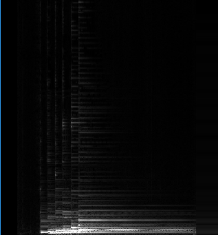
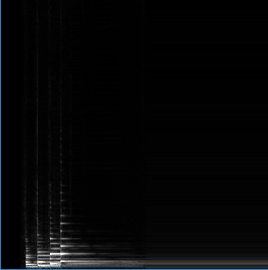

Music-Inspired Mathematics
The wait is over! It's been a while since my last article was posted, but I hope with the advent of spring break and some increased motivation to learn more, I'll be outputting more articles in the near future. There's a lot I've been wanting to self-study, so perhaps I'll put down some notes!
This article, although technically an assignment for an orchestra class, is something I've wanted to write for quite a while (especially after I wrote an expository paper of the same nature that didn't really live up to my expectations). The premise for writing is very simple: there's quite a bit of mathematics underlying the fundamentals of sound and music!
To a musician, this may already be apparent to some extent; we have time signatures and rhythms and harmonics and whatnot (you can even put a piano on a Möbius strip). However, in this article I'd like to show that even more fundamental components of music (such as sound) are formulated with even higher level mathematics, and more importantly, how a musical understanding can further mathematical thinking.
Signal Processing
The field of signal processing is one that intersects math (which deals with the theory behind analyzing them), computer science (as computers do the work to apply the theory), and some of the most important parts of modern life (these are where the signals come from!). While the field is not in any way strictly limited to analyzing only sound signals, I think it's best motivated in this domain.
As one is often told, sound is the vibration of air. In particular, it's the movement of air particles in longitudinal waves (back and forth in line with the direction of the wave). It is the frequency, the speed of the air particles as they move back and forth, that characterizes the sound we hear. The higher the frequency, or speed, the higher pitch that we hear, and the same works for the other direction. We model the behavior of the air particle mathematically by associating its position to a (periodic) function of time \(f(t)\). A very common example might be \(f(t) = A \sin(2 \pi f t)\), or in other words a periodic sine wave with amplitude \(A\) and frequency \(f\).
Very importantly, sound waves combine in a very natural way. If I have sound waves \(f(t)\) and \(g(t)\), their combination (i.e. when the waves run into eachother in the air) is simply the wave \(h(t)\), where \(h(t) = f(t) + g(t)\). At first glance, this fact does not seem too profound, but it is the reason why the tool in the next section even works.
With this background, we can now pose one of the fundamental questions of signal processing: how can we break up an existing sound wave into its individual frequencies? Mathematically, how can we go from \(h(t)\) to \(f(t) + g(t)\) as opposed to the other way around?
To convince you that this is a very canonical question, I will motivate it twofold:
- Why should we think this is possible? Because our human ears can do it! Especially those with perfect pitch are able to accurately pick out correct and incorrect pitches (and thus frequencies) from arbitrary sound waves. This doesn't necessarily mean it will be a simple process, but it has to be possible!
- Why do we care? There are a lot of things you can do with the individual frequencies of a sound. For a digital tuner, it is pivotal to be able to detect the individual frequencies being played. Having the individual frequencies allows one to analyze things like harmonics or overtones, and even do some really cool sound editing. In some cases, it is even more compact to store the frequencies of the sound as opposed to the sound wave data (although not sound waves precisely, this is actually the concept of JPEG images).
Our tool of choice to decompose the waves into their frequencies is the Fourier transform.
The Fourier Transform
Time to turn up the math a little! We define the Fourier transform of a signal \(f(t)\) to be \(\hat f (\xi)\) \[ \hat f (\xi) = \int_{-\infty}^{\infty} f(t) e^{-2 \pi i \xi t} \, dt .\] The formalism looks a bit scary, but the idea at hand is simple. Take a wave (the complex exponential) of known frequency \(\xi\) and multiply it by our signal, \(f(t)\). If the waves match well, their product should be relatively positive at many points (because the integrand will be close to \(f(t)^2\), leading to a high contribution associated with that frequency. If the waves do not match, the contribution will be closer to \(0\) or even negative. Since this transform is invertible (see the highly analogous inverse Fourier transform), we lose no information. In essence, we've transformed our viewpoint about the wave from time space to frequency space.
Before we move on, we should make one thing clear. We didn't necessarily have to choose the complex exponential (i.e. sinusoidal waves) for a Fourier-like transform. This gets into a little bit of linear algebra. The functions that we associate to waves live in the vector space \(L^2 (\mathbf{R})\), or square-integrable functions \(f : \mathbf{R} \to \mathbf{C}\) over the real line. Choosing a different set of functions as opposed to the continuum of complex exponentials amounts to choosing a different basis for this vector space of square-integrable functions. We like the complex exponentials, however, because they are easy to interpret and work with (it is easy to see what their frequency is), and they are orthonormal.
The Fourier transform is ubiquitous in that it transcends application to just sound analysis or even signal processing. Later in the article, we will explore the interpretability and consequences of the Fourier transform.
Example. Let's actually try taking the Fourier transform of a function. Consider a simple decaying wave like \(f(t) = e^{-a|t|}\), where \(a\) is an arbitrary decay factor. Following the definition yields \[\begin{align*} \hat f(\xi) &= \int_{-\infty}^{\infty} e^{-a|t|-2\pi i \xi t} \, dt \\ &= \int_{-\infty}^0 e^{(a - 2 \pi i \xi) t} \, dt + \int_{0}^{\infty} e^{-(a + 2 \pi i \xi) t} \, dt \\ &= \frac{1}{a - 2 \pi i \xi} + \frac{1}{a + 2 \pi i \xi} \\ &= \frac{2a}{a^2 + 4 \pi^2 \xi^2} .\end{align*}\] Looking at the graphs of \(f(t)\) and \(\hat f(\xi)\) side-by-side, we can realize that they are actually quite close in shape! This is very much not true in general, so it points to some interesting behavior going on with exponentials.
In this case, we have a very non-sinusoidal function, so it makes sense that we'd need a continuum of different frequency sinusoidals to express it. We can observe the inverse of this behavior when one takes the Fourier transform of explicit sinusoids. This transform yields expressions involving the Dirac delta function, which indicates not a continuum of frequencies but only a finite, discrete set of frequencies are needed.
Before we move on, there's one problem we have to clarify: the Fourier transform gives us a frequency decomposition for the wave over all points in time. It doesn't allow us to say what frequencies are being played at any one instant in time. This is where our previous discussion on bases comes into play. Instead of having basis functions that are global across time, we can parameterize them by a value in time to be localized around. This is the general concept of wavelets. There are many families of wavelets that each have their own perks, but the example I'll give is rather simplistic: Gaussian window wavelets. This is constructed by placing a Gaussian bell curve window centered at time \(t^*\) over our original complex exponential plane wave, yielding the basis \[ \Psi_{\xi, t^*} (t) = e^{-(t - t^*)^2 / 2 - 2 \pi i \xi t} .\] With this, we can in theory decompose our signals now!
Sampling: How Does a Tuner Work?
...Except there's a catch.
In real life, we cannot obtain perfectly continuous functions representing the signals we care about. To do so would require perfect information and precision, which just isn't feasible. The fact that we're stuck in the discrete world doesn't diminish the mathematical power of the Fourier transform, however. All we really need is a change of perspective.
Instead of assuming the knowledge of a continuous function, we can take discrete samples of our wave. Mathematically, we model this as a sequence of \(N\) numbers \((f_n)_{n = 1}^{N}\). Despite the discretization, many of the same properties carry over when considering signals. Most fantastically, we have discrete variants of the Fourier transform. There is the discrete Fourier transform (DFT), which is a direct analogue for the Fourier transform, and even the short-time Fourier transform (STFT), which forms an analogue for the wavelet work from earlier. In addition, there is the highly celebrated fast Fourier transform (FFT), which is an efficient algorithm for computing these transforms.
One thing to keep in mind with these discrete variants of the Fourier transform for signal processing is the inclusion of an additional needed parameter: the sampling rate, or the number of samples that we take per second. Intuitively, low sampling rates must lose a bit of information as compared to high sampling rates. This intuition is made mathematical with the Nyquist-Shannon sampling theorem.
Theorem (Nyquist-Shannon). A signal with sampling rate \(f_s\) can only accurately describe frequencies less than or equal to \(f_s / 2\).
Thus, we have to have sufficiently enough samples. Humans can only hear in the range of roughly \(2 \text{ kHz}\) to \(20 \text{ kHz}\), so one will typically see audio files with a sampling rate of around \(40 \text{ kHz}\) to account for this. Sampling rate is not necessarily a measure of audio quality, but rather bandwith.
The theory presented here is now sufficient for us to actually analyze signals! So, that's exactly what we're going to do. For the sake of fun and comparison, I've recorded two audio files, one where the open strings of a guitar are played and another where the open strings of a viola are played:
Let's put them through STFT! Doing so yields the following images (guitar on top, viola on bottom). Of course, some things are immediately obvious: the SFTF shows 6 main strips due to 6 strings, while the viola shows 4. In addition, we can see each of the main frequencies being carried through (these are the brighest strands), but we can also see the many overtones that characterize the instruments. Cool!


Music Motivating Mathematics
We've gone over the mathematics behind music, but we can equally go into the music behind mathematics! The Fourier transform, very naturally motivated by music theory, is almost ubiquitous in mathematics and several applied fields. It has wide applications in quantum mechanics (position and momentum among other things are Fourier transforms of each other), combinatorics (coefficient extraction allows one to derive asymptotics for the coefficients of generating functions), and even differential equations (transforming differential equations to algebraic ones).
But even without all the powerful tools and fancy subfields, I'd like to argue that a musical background can offer a really cool perspective and contribute to mathematical thinking itself. This insight first jumped out to me when I was working on a Project Euler problem having nothing to do with music at all!
First, let's build up with something rather music-related: polyrhythms!
Polyrhythms
A polyrhythm is exactly what the name suggests: multiple rhythms. For our purposes, it is the superposition of several rhythms with a beat in uniform intervals. For example, a \(2, 3\) polyrhythm would be a rhythm that plays twice every measure superposed over a rhythm that plays thrice every measure. We can create a polyrhythm for any arbitrary sequence of numbers.
In a single measure, some of the beats of a polyrhythm may align. For example, consider the \(4, 6\) polyrhythm. There's clearly an overlap when both rhythms hit the beat in the middle of the measure.
A natural question might be to ask how many unique beats (i.e. considering any overlapping beats as one single beat) are heard in a single measure. For example, in a \(2, 3\) polyrhythm, you can hear \(4\) unique beats. In a \(2, 3, 4, 5\) polyrhythm, you can hear \(10\) unique beats.
As mathematicians, we like to generalize, so we have the following question.
Question. For a \(q_1, q_2, \ldots, q_n\) polyrhythm, how many unique beats are heard?
Depending on how simple of an answer you want, the solution isn't all too difficult. Think for a moment: we're dividing a single measure into \(q_k\) parts for each \(k\). This means we can associate each beat with the time it is played, which should be of the form \(i / q_k\) for some \(1 \le i \le q_k\). Thus, the number of unique beats is the number of unique fractions of these forms! This checks out with our examples from before, as with the example of the \(2, 3, 4, 5\) polyrhythm, the fractions are \[ \left\{ \frac{1}{5}, \frac{1}{4}, \frac{1}{3}, \frac{2}{5}, \frac{1}{2}, \frac{3}{5}, \frac{2}{3}, \frac{3}{4}, \frac{4}{5}, \frac{1}{1} \right\} .\] (Although, as written, technically \(1/1\) is not of the form \(i/q_k\), it looks nicer that way).
Without motivation, this seems at most to be a little fun fact, but I would like the reader to consider the following Project Euler problem on Minkowski sums. The problem looks nothing alike to what we are doing, but hidden beneath it is some nice musical thinking!
The key insight to the problem is that we only need to consider the Minkowski sum of the points on the border of the respective polygons. In addition, consider the unique point on the border of each shape when extending out a ray in the direction of an angle \(\theta\) (this is always possible by convexity). The point on the border of the Minkowski sum at that same angle \(\theta\) is precisely the sum of those two points. The last piece of the puzzle is that there's a vertex at angle \(\theta\) in the summed shape only if there is a vertex at angle \(\theta\) in any of the shapes. Of course, we can't just add up the vertices of the original shapes because we have to account for the overlaps. In effect, each vertex is a beat!
But we already know how to count in situations like this! The problem reduces down to a \(1864, 1865, \ldots, 1909\) polyrhythm! I'll leave the rest of the computation up to the reader.
Conclusion
When I first started receiving private lessons in the viola some years ago, I told my private instructor that I liked mathematics. In response, he was delighted to tell me that there was a lot of math in music. At the time, I had no clue what he was talking about, so I unfortunately brushed him off. Years later, I am now writing an article about math in music, so I suppose he had the last laugh.
Thank you for reading :D! Although some parts were inevitably rushed and scrapped, I still enjoyed writing this a lot and getting back into mathematical writing. Happy spring break, everyone!